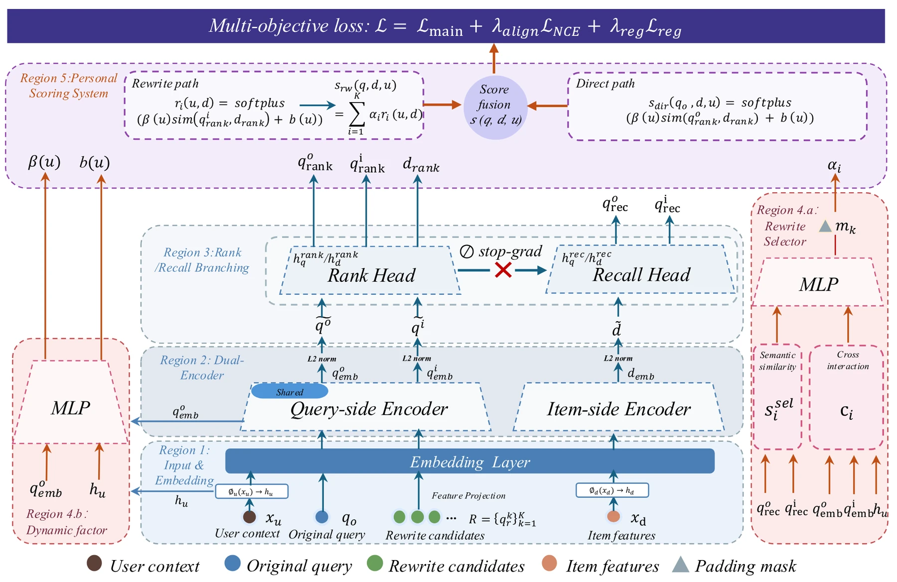
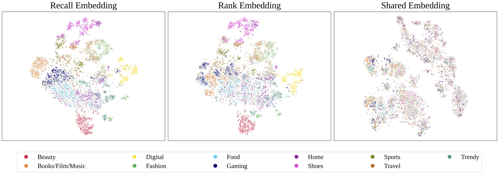
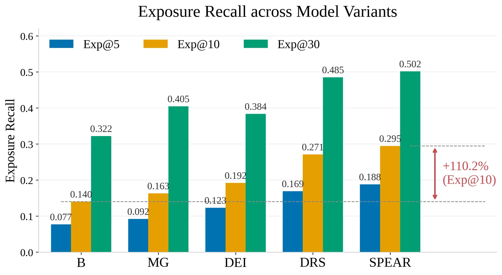

目录 · 9 节
1背景：现有做法错在哪里2先看全景：SPEAR 由哪几块组成3为什么 recall embedding 和 rank embedding 要分开4为什么改写的权重要和相关性相乘5改写选择器怎么学6实验：离线、线上和人工评测7我认为它的局限8一个搜索团队可以怎么试9总结评价把推荐里的 PDN（Path-based Deep Network）搬到搜索里挑改写词，会学出一条捷径：“手机壳”“女士连衣裙”这类高频泛词能连上大量内容，也确实带来点击，于是总被选中，用户写下的品牌、型号等限定却丢了。SPEAR（一种端到端训练的个性化改写选择与检索框架）让改写选择直接接受最终点击的监督，再加两道约束：改写的选择权重和它对内容的相关性相乘，两者都高才得分；召回和排序各用一套 embedding，点击目标的梯度不回传到召回那一支。在 10 万条留出的线上会话上，点击召回 Recall@10 从 0.1694 提到 0.3380，改写和原 query 的语义相似度也一起上升。
背景：现有做法错在哪里
社区搜索里，用户的 query 往往很短、很口语，还常带品牌和型号，比如“361° 飞燃跑鞋”“男士冬季睡觉睡衣”。系统通常先把一条 query 扩成若干个改写词，再拿每个改写词去捞内容（这里的内容是用户发的帖子和笔记）。好的改写既要多捞到内容，又不能丢掉用户写明的品牌、型号、场景和属性。论文认为，现有做法在三个地方出了错。
第一个问题是改写和召回各练各的。业界常见做法分两段：改写模块按代理目标挑改写，比如和原 query 的语义相似度、语言模型的 perplexity；下游召回和排序则按曝光、点击训练。两段分开优化，改写词看起来合理，不等于它能把用户想看的内容捞上来。
第二个问题出在补救办法上：把推荐里的 PDN 直接搬过来，会学出捷径。自然的修法是端到端联合训练，推荐里的 PDN 正是这么做的：它把“用户 → trigger（用户交互过的物品）→ 目标物品”这类两跳路径的分数加起来，让点击信号同时训练“选哪个 trigger”和“trigger 与目标有多像”。搬到搜索里，路径变成“query → 改写 → 内容”，点击监督就能一路回传到改写选择。麻烦在于，推荐只追求点击，不要求结果和用户明说的意图对得上。在加法聚合下，“手机壳”“女士连衣裙”这类高频泛词先验高、能连上大量内容，单靠选择分就能把路径总分抬上去，哪怕它和目标内容几乎不相关。论文把这种现象叫作 generic-word dominance effect。它很难从整体 CTR 上看出来：宽泛的结果也有人点，只是点的不是最相关的那些。
论文表 5 的三条 query 把这种漂移摆得很清楚：
- “361° 飞燃跑鞋”：线上 PDN 基线的前十个改写里有“李宁”“李宁赤兔 9”“羽毛球鞋”“棉鞋”，已经不是 361° 的飞燃。SPEAR 的前十个全部围绕这个型号，例如“361 飞燃 4mix”和不同代数的“飞燃”。
- “男士冬季睡觉睡衣”：基线常常丢掉“男士”“冬季”“睡衣”中的一两个，漂到“男装”“李宁羽绒服”这类词。SPEAR 的前十个三个属性都保留，再补上“加厚”“纯棉”等限定。
- “手提包”：基线漂到“女孩书包”“Hello Kitty”“sw1480x”。SPEAR 给出“大容量女包”“女士斜挎包”“生日礼物手提包”，保留原意，再补一个属性。
第三个问题是召回和排序共用一套 embedding。召回要靠稳定的类目和语义结构来判断改写和原 query 像不像，点击排序却偏爱短期的热门点击模式。两者共用一个 embedding 空间时，排序的梯度会把召回用的表征拉向热门方向，不同品牌之间的边界也跟着变模糊。后文讲 recall embedding 和 rank embedding 为什么要分开时，会给出量化证据。
所以作者真正要解决的是：在不牺牲 two-tower 召回的可扩展性和线上延迟的前提下，让改写选择直接接受最终点击的监督，同时在模型结构上挡住语义漂移。这项工作建立在 PDN、MOPPR（在 PDN 基础上加入多目标个性化的方法）、two-tower 召回和对比学习之上，但目标变了：推荐里挑 trigger 只需要带来点击，搜索里挑改写还必须忠于用户写下的意图。
先看全景：SPEAR 由哪几块组成

一条训练样本由五样东西组成：用户 、原始 query 、离线挖出来的 个候选改写 、一篇内容 ，以及这次曝光有没有被点击 。候选改写不足 个时用掩码补齐，不参与打分。
候选改写来自两路离线挖掘。一路是行为挖掘：用 180 天的点击日志建 query–内容二部图，用 Swing 算法找“点过同一批内容的 query”，每天大约产出 9.6 亿对 query–query 关系。另一路是语义挖掘：用文本 embedding 做近邻检索，每天大约 1.08 亿对，用来补足长尾 query。SPEAR 不负责生成改写，只负责在这些候选里挑、并决定每个改写占多大权重。
前向过程按从下到上的顺序是：
- 原 query、每个候选改写都过同一个 query 编码器，内容过内容编码器，embedding 都做 L2 归一化。
- 每个 embedding 再分两支：Recall Head 输出 recall embedding，Rank Head 输出 rank embedding。
- 选择器看 recall embedding 和用户特征，给每个候选改写一个权重 。
- 打分模块用 rank embedding 算“改写和内容有多相关”，乘上 后加总，再加上原 query 直连内容的分数（direct path），得到最终分。
- 最终分换成点击概率，和真实点击算交叉熵。
下面三节分别讲为什么要分两支 embedding、为什么用乘法、选择器怎么学。
为什么 recall embedding 和 rank embedding 要分开
如果召回和排序共享一套 embedding，点击目标的梯度会一路传到召回所用的表征上。点击信号偏爱热门内容，recall embedding 就会被拉向“热门”这个方向，语义上相近的改写反而不再靠在一起。
SPEAR 的做法是在共享编码器之上分出两个轻量 MLP。Rank Head 接受点击损失的全部梯度，负责“这篇内容会不会被点”。Recall Head 只接受 InfoNCE 损失（见下文）的梯度，点击损失传到它这里时被 stop-gradient 截断，相当于主损失对 Recall Head 参数的梯度恒为零。两个头共享底层编码器，所以底层仍然同时学到语义和行为信号。
论文用 t-SNE（一种把高维 embedding 压到二维看分布的方法）验证了这一点。他们取 7,997 篇已知类目的内容，分别用 recall embedding、rank embedding 和共享 embedding 的模型画图。

论文还给了量化指标。Purity@10 指一篇内容的 10 个最近邻里有多少和它同类，越高说明类目越纯：
| 指标 | recall embedding | rank embedding | 共享 embedding |
|---|---|---|---|
| Purity@10 | 0.740 | 0.698 | 0.229 |
| Purity@50 | 0.676 | 0.619 | 0.189 |
| 类间 / 类内距离比 | 1.753 | 1.658 | 1.039 |
| effective rank ratio | 0.288 | 0.442 | 0.428 |
表中 effective rank ratio 指 embedding 实际用上的有效维度数占总维度的比例，越高说明信息分散到越多维度上。
共享 embedding 时 Purity@10 只有 0.229，类间和类内距离几乎一样（比值 1.039），说明类目结构基本被点击信号冲掉了。两支 embedding 分开后也各有侧重。recall embedding 的类目纯度和类间距离比都最高，适合判断改写和原 query 像不像。rank embedding 的 effective rank ratio 最高（0.442，recall embedding 是 0.288），说明它把信息分散到更多维度上，用来区分同一类目里的细微差别。
为什么改写的权重要和相关性相乘
背景里说的捷径出在加法聚合上。假设一条 rewrite path 的贡献写成“选择分 + 相关分”。那么选择器只要对某个泛词给出很高的选择分，这条路径的分数就已经很高，哪怕它和目标内容几乎不相关。点击目标下，这样的路径又常常真的带来点击，于是选择器越学越偏向泛词。
为了堵住这条捷径，SPEAR 把加法改成乘法。对第 个改写和内容 ，先算一个非负的相关分：
这里 是 rank embedding 之间的余弦相似度，softplus 是一个平滑、恒为正的函数（）。rewrite path 的总分是 ，原 query 直连内容的分数 用同一个公式算，最后 。
举个例子（示意数字）：泛词“跑鞋”的选择权重是 0.8，它和一篇“飞燃 4 上脚测评”的相关分是 0.1。按加法，这条路径拿到 0.8+0.1=0.9；按乘法，只剩 0.8×0.1=0.08。专门的改写“361 飞燃 4”权重只有 0.2，但相关分是 0.9，乘法下贡献 0.18，反而比泛词高。选择权重高但对不上内容的路径，乘法下几乎没有贡献，选择器也就没法只靠“选热门”来拿分。
直连项 像一条残差连接：即使候选改写全都不理想，原 query 本身仍能把相关内容打上来。
改写选择器怎么学
选择器给每个候选改写打一个分，再用带温度的 softmax（被掩码补齐的位置不参与）换成权重 ，所有权重加起来等于 1。它的输入有两部分：
- 语义相似：原 query 和改写在 recall embedding 上的余弦相似度。这一项在送进选择器之前也做 stop-gradient，选择器只能读它，不能为了点击去改它。
- 交叉特征：用户特征和原 query 的 embedding 拼起来，过一个小网络映射到和改写 embedding 相同的维度，再和改写的 embedding 逐元素相乘，得到一个交叉 embedding。这让同一个改写对不同用户可以有不同权重，例如搜“手提包”的用户过去常看大容量款，“大容量手提包”的权重就可以更高（示意）。
选择器把交叉 embedding 和语义相似度拼在一起，送进一个 MLP，输出这个改写的分数。softmax 的温度可学习，初始值 0.8，下限 0.6。温度太低，权重会全压到一个改写上，其他候选学不到东西；设下限就是为了避免这种过早塌缩。
左侧的小网络根据用户和原 query 输出 和 $b(u)$： 决定相似度差一点时分数差多少， 决定整体分数的基线。这样同一个相似度，对口味明确的用户和随便逛逛的用户可以换算成不同的相关分。
最终分 非负，SPEAR 用下面的式子把它换成点击概率：
其中 clip 把 限制在一个数值安全的范围里，防止指数运算溢出。$s=0$ 时概率为 0， 越大越接近 1。手算一下：$s=1$ 时概率约 0.632，$s=2$ 时约 0.865。这种换算和“几条路径的证据相加”的结构是配套的：多一条有用的路径，分数就加一截，概率随之单调上升。主损失是这个概率和真实点击之间的二元交叉熵。
Recall Head 不接受点击损失，就需要另一个信号来训练它。SPEAR 加了一个 InfoNCE 损失，在 recall embedding 空间里做 query–内容的对比学习：原 query 的 recall embedding 要靠近被点击内容的 recall embedding、远离负样本；把各改写的 recall embedding 按 加权平均（权重做 stop-gradient，这个损失不去改选择器）得到的改写混合 embedding，也按同样的方式训练。总损失是三项相加：
其中 是常规的参数正则项，系数 ；InfoNCE 损失系数 ，温度 0.07。InfoNCE 损失的系数比主损失小一个量级，它的作用是让召回空间保持“相关的 query 和内容靠在一起”的结构，不和点击目标抢主导。
实验：离线、线上和人工评测
实验在得物的社区内容搜索上做，用一周日志训练（2026 年 3 月 8 日到 14 日），在 3 月 15 日留出的 10 万条会话上离线评测。对照组是线上正在用的 PDN（Path-based Deep Network，推荐里常用的 user–trigger–item 路径结构）。为了看每一块的作用，论文在基线上每次只单独加入一个组件，再和三者全加的完整版本比较：
- MG（Multiplicative Gating）：只把加法打分换成乘法打分。
- DEI（Dual-Embedding Isolation）：只把 recall embedding 和 rank embedding 分开。
- DRS（Dynamic Rewrite Selector）：只加端到端训练的改写选择器。
- SPEAR：三者都加。
先看点击召回。各方案的检索方式相同，差别只在挑出哪些改写。Click Recall@K 衡量改写的覆盖面：每个方案选出排在前 K 位的改写，各自走线上同一条检索链路召回内容，再看用户在这次会话里真实点过的内容有多大比例落在召回结果里。数值越高，说明挑出的改写越能连到用户真正想看的内容。
| 方法 | Recall@5 | Recall@10 | Recall@30 |
|---|---|---|---|
| 基线 PDN | 0.0958 | 0.1694 | 0.3699 |
| +MG | 0.1132 | 0.1972 | 0.4572 |
| +DEI | 0.1490 | 0.2286 | 0.4371 |
| +DRS | 0.2035 | 0.3167 | 0.5415 |
| SPEAR | 0.2223 | 0.3380 | 0.5519 |
单个组件里 DRS 贡献最大，Recall@10 相对基线 +86.9%，DEI +34.9%，MG +16.4%，三者合起来是 +99.5%。这说明“让改写选择对点击负责”是召回提升的主要来源，另外两块在此基础上还能再加一截。

曝光召回的趋势和点击召回一致：DRS 单独 +93.4%，DEI +37.0%，MG +16.5%。
再看语义有没有跑偏。论文用线上一个在人工标注 query 对上训练的相关性模型，计算前 K 个改写和原 query 的平均余弦相似度：
| 方法 | 前 5 | 前 10 | 前 30 |
|---|---|---|---|
| 基线 PDN | 0.7038 | 0.6986 | 0.6975 |
| +MG | 0.7919 | 0.7822 | 0.7607 |
| +DEI | 0.7487 | 0.7518 | 0.7344 |
| +DRS | 0.6899 | 0.6949 | 0.7020 |
| SPEAR | 0.8443 | 0.8258 | 0.7855 |
这张表最能说明设计意图。只加选择器时，召回涨得最多，前 10 个改写的语义相似度却比基线略低（-0.5%），也就是点击监督确实会把改写往泛词方向拉。MG 单独就能把相似度提 11.9%，DEI 提 7.6%，三者合起来提 18.2%。这说明另外两块在这里起的是“刹车”作用：召回靠选择器，语义靠结构约束。
线上 A/B 按用户每日指标做双侧检验，结果如下：
| 指标 | 含义 | 相对提升 | 是否显著 |
|---|---|---|---|
| QVCTR | 内容搜索的 query 级点击率 | +0.259% | 是 |
| UVCTR | 双列结果页的用户级点击率 | +0.337% | 是 |
| ReadVV | 搜索用户的平均阅读深度 | +0.733% | 是 |
| TabDur | 内容 tab 的平均停留时长 | +0.467% | 是 |
| 次日留存 | 次日回访 | +0.328% | 否 |
| 7 日留存 | 7 日回访 | +0.216% | 否 |
阅读深度和停留时长涨得比点击率多，说明新增的点击多半落在用户愿意继续看的内容上。留存方向为正但不显著，这类指标通常需要更长的实验周期。
人工评测用的是 GSB（Good / Same / Bad 对比打分）。从线上流量里抽出 150 条两组前 6 条结果不同的 query，标注员给每条结果分别打满意度分和相关性分，再按位置加权（越靠前权重越大）汇总成每组结果的 DCG 分，根据两组 DCG 的差把每条 query 记为好、持平或差。结果是 SPEAR 的满意度 DCG 和相关性 DCG 都高于基线，前 6 条结果里被标为相关性差的结果占比低 0.46 个百分点，三项方向一致。按标注员的偏好统计，偏好 SPEAR 的 query 比偏好基线的净多 4.6%，差异显著。这说明离线召回的提升没有以结果质量为代价，人看到的前几条结果也更好。
部署方面，选择器单次请求耗时约 25 毫秒，和其他 query 理解模块一起在原有的 30 毫秒阶段里并行执行，所以端到端延迟没有增加。SPEAR 从 2025 年起已在线上全量部署。
我认为它的局限
- 对照组只有一个线上 PDN 基线。论文的理由是其他相关方法只覆盖这个端到端问题的一部分，不能直接比较，但读者因此无法判断它和基于大模型的改写方法相比如何。
- 选择器只能在离线挖好的候选里挑。候选来自 Swing 和 embedding 近邻两路挖掘，如果某条长尾 query 的候选里本来就没有好改写，SPEAR 也挑不出来。
- 选择器单独上时语义相似度下降 0.5%，说明整套方法对 MG 和 DEI 这两道约束依赖很强。只想拿选择器去提召回的团队，可能会重新遇到语义漂移。
- 留存类指标不显著，人工评测只覆盖 150 条 query。长期价值和大范围的语义质量还需要更多证据。
一个搜索团队可以怎么试
- 先诊断：把线上改写按“选择权重”和“与原 query 的语义相似度”两个维度画散点，看是否存在权重高、相似度低的泛词。如果这类改写大量存在，就是 generic-word dominance effect 的信号。
- 最便宜的一步是把 rewrite path 的“权重 + 相关分”改成“权重 × 相关分”。论文里这一步单独就让 Recall@10 涨 16.4%，语义相似度涨 11.9%，改动只在打分层。
- 如果召回和排序共享一套 query embedding，可以在共享编码器上分出 Recall Head 和 Rank Head，并在 Recall Head 上对点击损失做 stop-gradient。上线前可以用类目纯度（同类内容在近邻里的占比）检查 recall embedding 有没有被点击信号冲散。
- 最后再加端到端训练的选择器和 InfoNCE 损失。可以从论文的超参起步：InfoNCE 系数 0.1、温度 0.07，选择器温度初始 0.8、下限 0.6。
总结评价
| 维度 | 评价 |
|---|---|
| 问题重要性 | 高。改写和召回目标割裂、泛词抢占流量，是社区和电商搜索里普遍存在的问题 |
| 方法创新性 | 中高。三块单看都不复杂，价值在于把“点击监督”和“防跑题约束”配成一套，并用消融说明各自作用 |
| 实验证据 | 较强。离线点击和曝光召回、语义相似度、线上 A/B、人工评测、表征可视化都有，但对照组只有一个线上基线 |
| 工程成本 | 中。需要离线候选挖掘、额外的选择器推理，延迟靠并行消化 |
| 是否值得尝试 | 值得。MG 和 DEI 可以分步上线，改动小、可单独验证 |
总的来说，这篇论文值得搜索团队细读。它把改写和召回目标割裂、泛词抢走流量这个常见毛病拆清楚了，给出的三处改法（乘法打分、两支 embedding 加 stop-gradient、端到端训练的选择器）都能分步照搬。证据也比较完整：离线 Recall@10 几乎翻倍的同时，改写和原 query 的语义相似度没有下降反而上升；线上 A/B 里 query 级点击率和阅读深度都显著提升。论文已被 RecSys 2026 主会录用。
讨论
欢迎补充实验细节、复现经验或不同看法。需 GitHub 登录。
正在加载讨论…